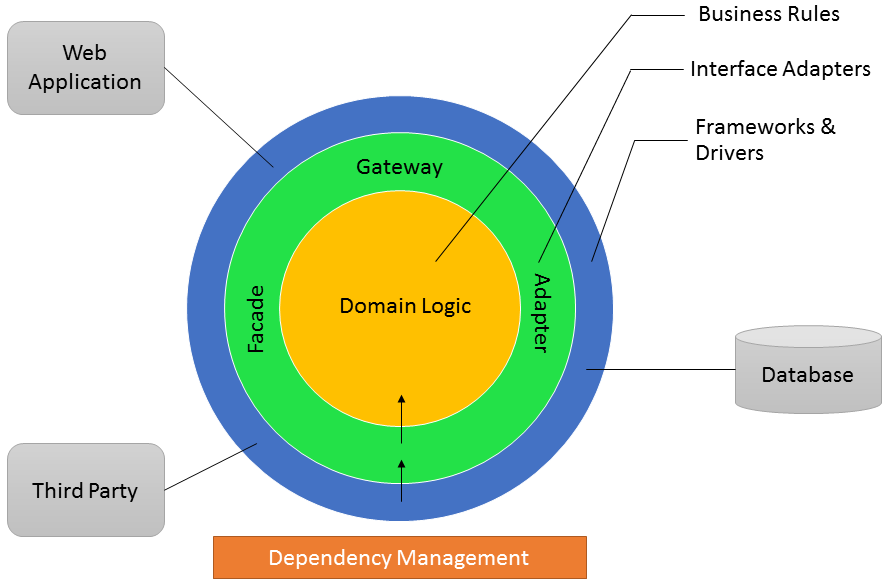
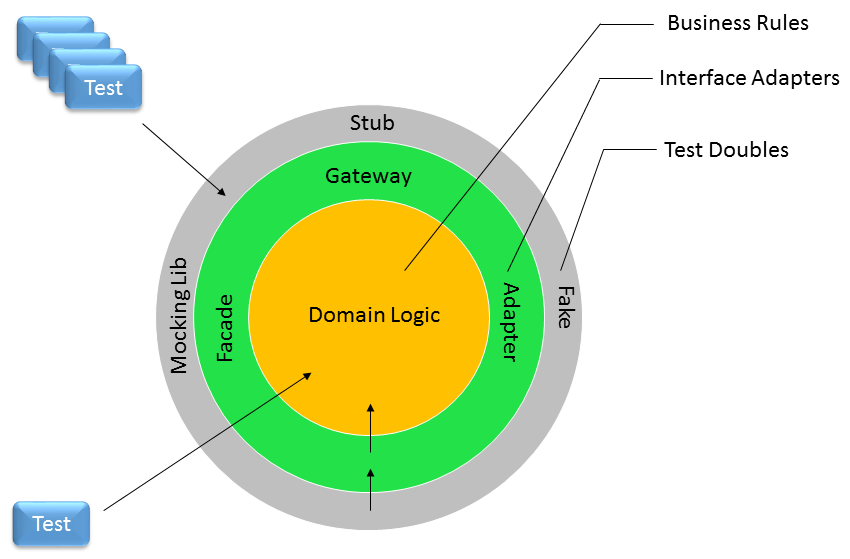

Clean Architecture
The Plan
- N-Tier Applications
- Dependency Inversion Principal
- Clean Architecture
- Switching to Clean Architecture
N-Tier Applications

Good Things
- Layers Work
- Simple
Bad Things
Transitive Dependency

We can do better.
Dependency Inversion Principle (DIP)
SOLID Principle
- Single Responsibility Principles
- Open / Closed Principle
- Liskov Substitution Principle
- Interface Segregation Principle
- Dependency Inversion Principle
A. High-level modules should not depend on low-level modules. Both should depend on abstractions.
B. Abstractions should not depend on details. Details should depend on abstractions.
High Level Policy
- Use Cases
- Business Rules
- Tend to change for Business Reasons
Low Level Details
- SQL Queries
- Third party library calls
- Can change due to NON Business Reasons
N-Tier Violates DIP

Clean Architecture
Improved Architecture
- Minimizes the effect of NON-Business Changes
- Decouples from User Interface Frameworks
- Decouples the use of databases, 3rd party applications, 3rd party libraries
- Improved support for Unit Testing
Key Concept
BUSINESS RULES => Central Abstraction
NOT the database
Clean Architecture
Business Rules Core Shall...
- have no dependencies
- be organized by business rules / uses cases
- contain 80% of system code
- make a good use of OOP
Organized by Business Rules

Domain Logic Patterns

Clean Architecture
Testable Architecture
Switching to Clean Architecture
Two Options
- Long Term Refactoring Strategy with Tests
- Rewrite